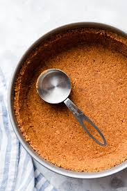
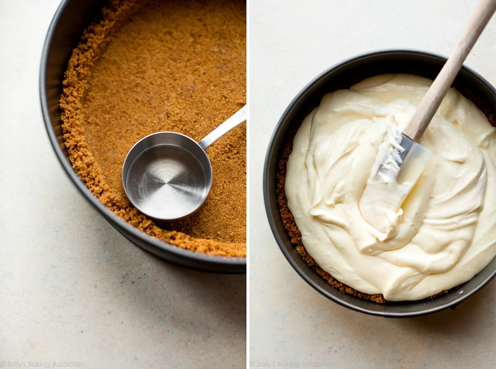

Since classic is the keyword of the day, we’re sticking with cheesecake’s main squeeze: a graham cracker crust. I reduced the butter from my original graham cracker crust recipe by 1 Tablespoon. I find this crust remains a little more crunchy. Make sure you pack the crust in tight and pre-bake it to help prevent any sogginess.
I like to use the bottom of a small measuring cup to smooth the crust mixture into the springform pan. Speaking of, you’ll need a 9-inch or 10-inch springform pan. A springform pan has removable sides so you can safely release the cheesecake without having to flip the pan over or struggle to cut the cheesecake inside the pan. Springform pans can leak if you’re baking the cheesecake in a water bath (more on that below!), but this particular pan is reliable. I haven’t had any leaking issues.
I promise a water bath is nothing complicated. All you’re doing is placing the springform pan in a roasting pan, filling it with hot water, and baking. What’s the point, you ask?
You see, cheesecake loves a humid environment. The steam from the hot water will lift the cheesecake up slowly and evenly, reducing the risk of cracks on the surface. Additionally, this slow and even baking method helps prevent the cheesecake from sinking back down as it cools. Taking a few extra minutes to prepare a water bath for this cheesecake recipe is well worth it.
Sally's video tutorial on how to make a Cheesecake water bath